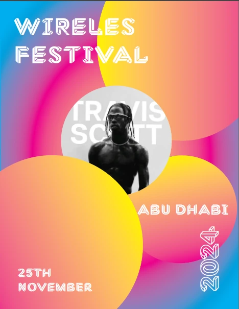
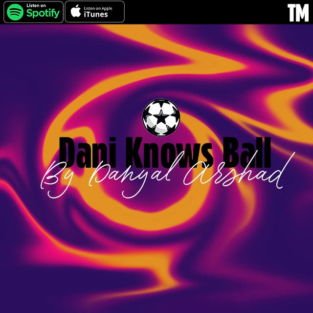
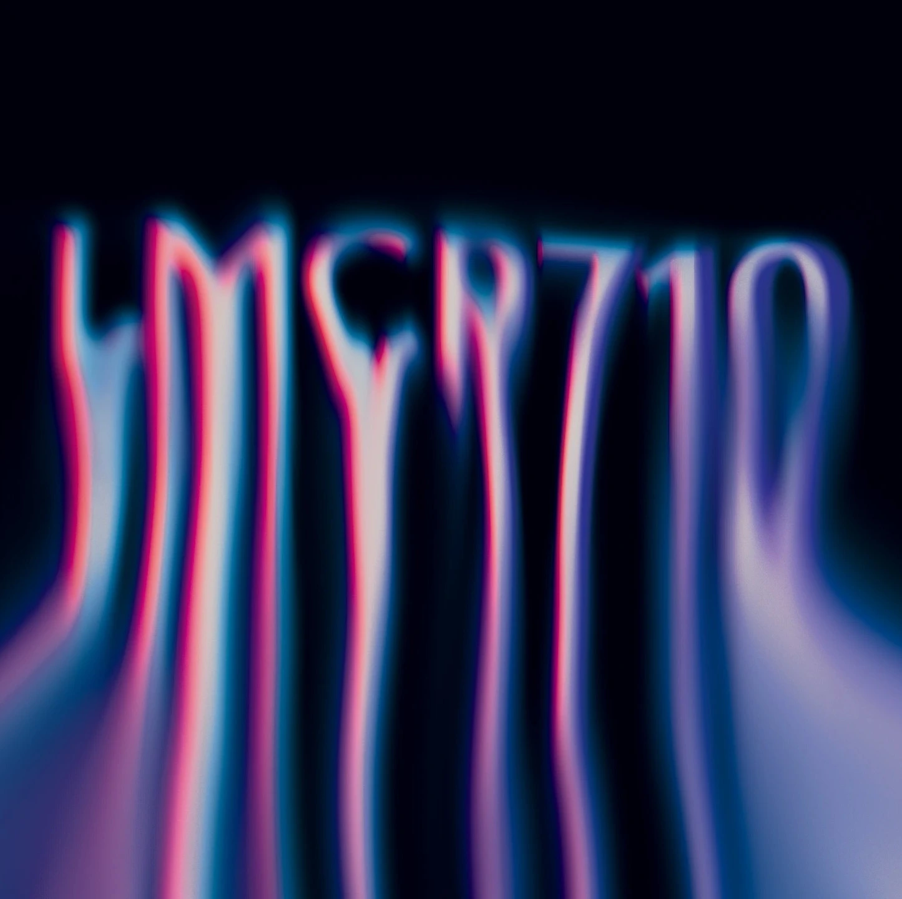
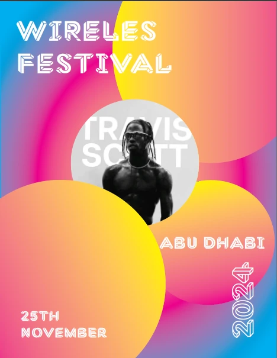
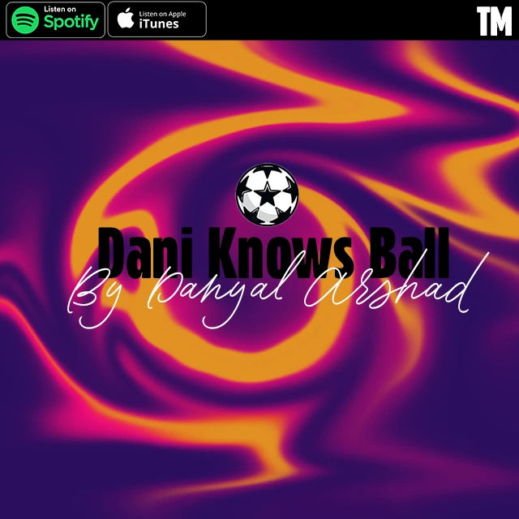
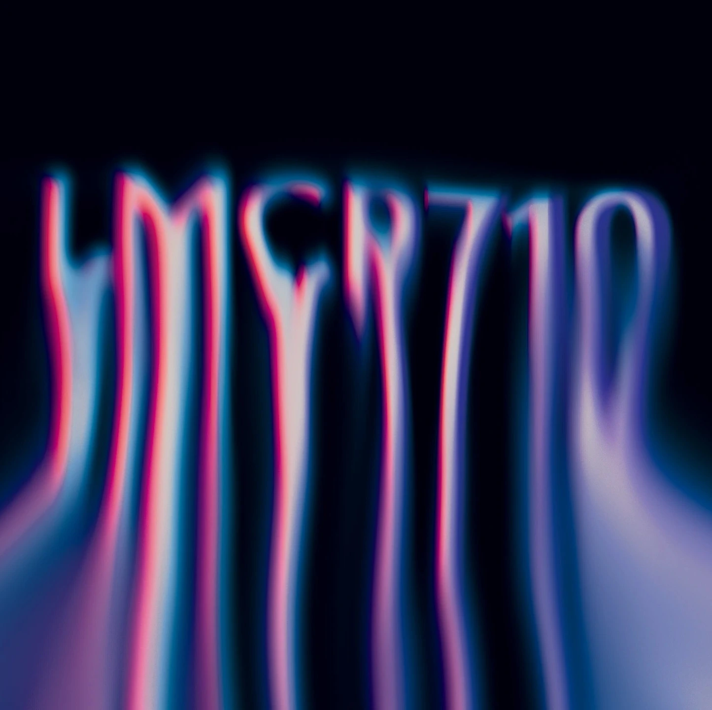
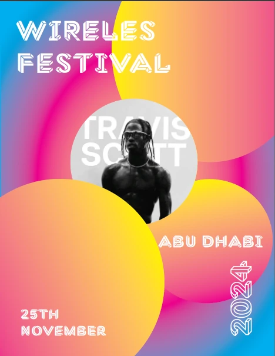
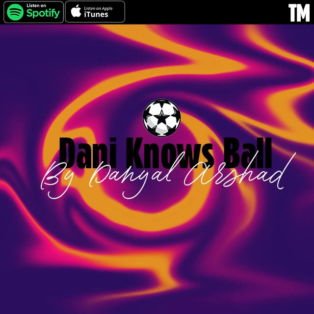
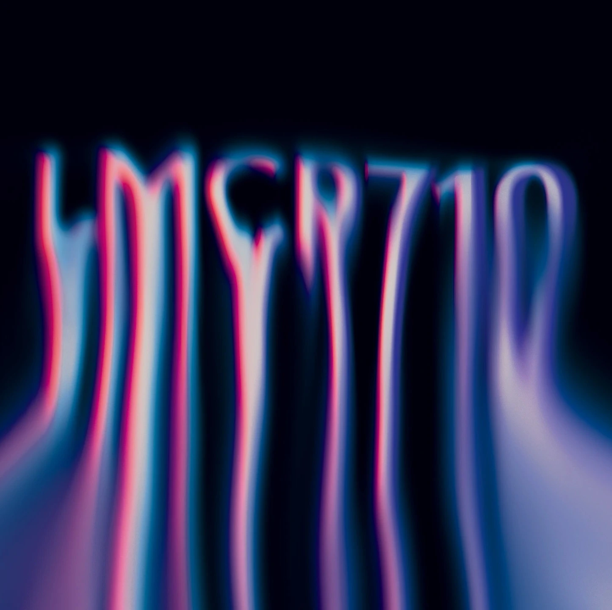

As a graphic design student at SAIT, I have honed my skills in visual communication, focusing on both creative and technical aspects of design. With 7 years of experience in video editing, I have developed a strong foundation in crafting engaging content for various platforms, including YouTube, client projects, and freelancing work. This blend of graphic design and video editing allows me to approach design problems with a versatile perspective, ensuring effective and impactful visual solutions.
My Portfolio
Here are some of my works from this semester



Live Streaming
This is a demo of my live streaming work, where I handle everything from technical setup to post production editing.
About Me
Hello, I'm Dani, a graphic design student with over seven years of experience in video editing and multimedia creation. My passion for design and storytelling has led me to explore a wide range of creative disciplines, from branding and motion graphics to digital media production. I enjoy bringing ideas to life through visually compelling content that resonates with audiences.
With a strong foundation in design principles and a keen eye for detail, I strive to create impactful visuals that not only meet client needs but also push creative boundaries. Whether it's crafting a logo, designing a brand guide, or working on a video production, I approach each project with dedication, ensuring every detail aligns with the vision.
Through my work, I aim to inspire and engage, offering solutions that are both aesthetically pleasing and functional. I am always exploring new trends and technologies to keep my designs fresh and innovative, ensuring that my work remains relevant in an ever-evolving creative landscape.
Feel free to explore my portfolio, and let's connect to bring your next project to life.
 




